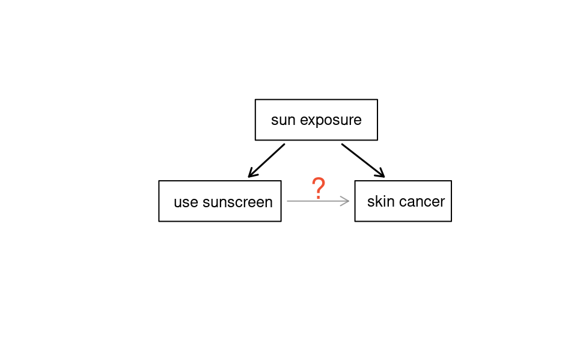
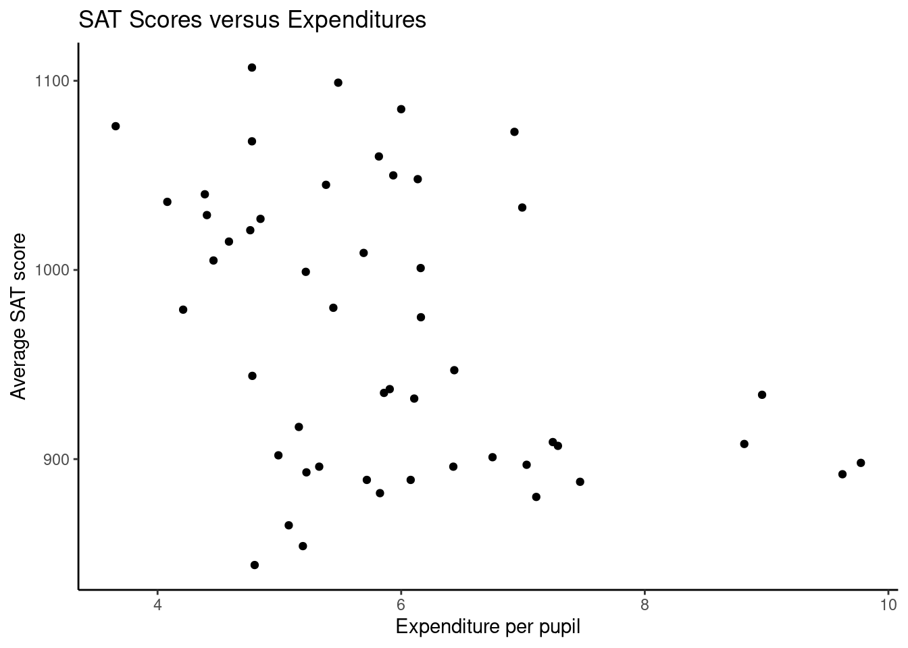
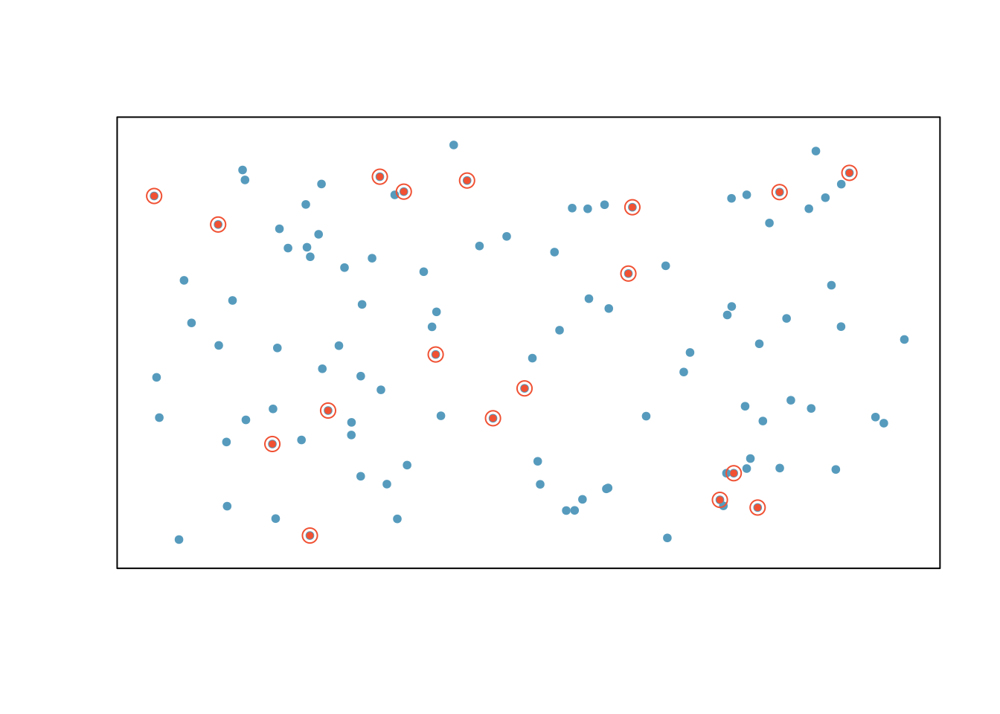

4 Studies
4.1 Objectives
Define and use properly in context all new terminology, to include: confounding variable, prospective study, retrospective study, simple random sampling, stratified sampling, strata, cluster sampling, multistage sampling, experiment, randomized experiment, control, replicate, blocking, blocks, treatment group, control group, blinded study, placebo, placebo effect, and double-blind.
Given a study description, be able to describe the study using correct terminology.
Given a scenario, describe flaws in reasoning and propose study and sampling designs.
4.2 Observation studies, sampling strategies, and experiments
4.2.1 Observational studies
Generally, data in observational studies are collected only by monitoring what occurs, while experiments require the primary explanatory variable in a study be assigned for each subject by the researchers.
Making causal conclusions based on experiments is often reasonable. However, making the same causal conclusions based on observational data can be treacherous and is not recommended. Thus, observational studies are generally only sufficient to show associations.
Exercise:
Suppose an observational study tracked sunscreen use and skin cancer, and it was found that the more sunscreen someone used, the more likely the person was to have skin cancer. Does this mean sunscreen causes skin cancer?1
Some previous research2 tells us that using sunscreen actually reduces skin cancer risk, so maybe there is another variable that can explain this hypothetical association between sunscreen usage and skin cancer. One important piece of information that is absent is sun exposure. If someone is out in the sun all day, she is more likely to use sunscreen and more likely to get skin cancer. Exposure to the sun is unaccounted for in the simple investigation.
Sun exposure is what is called a confounding variable,3 which is a variable that is correlated with both the explanatory and response variables, see Figure 4.1. While one method to justify making causal conclusions from observational studies is to exhaust the search for confounding variables, there is no guarantee that all confounding variables can be examined or measured.
Let’s look at an example of confounding visually. Using the SAT data from the mosaic package let’s look at expenditure per pupil versus SAT scores. Figure 4.2 is a plot of the data.
Exercise:
What conclusion do you reach from the plot in Figure 4.2?4

The implication that spending less might give better results is not justified. Expenditures are confounded with the proportion of students who take the exam, and scores are higher in states where fewer students take the exam.
It is interesting to look at the original plot if we place the states into two groups depending on whether more or fewer than 40% of students take the SAT. Figure 4.3 is a plot of the data broken down into the 2 groups.

Once we account for the fraction of students taking the SAT, the relationship between expenditures and SAT scores changes.
In the same way, the county data set is an observational study with confounding variables, and its data cannot easily be used to make causal conclusions.
Exercise:
Figure 4.4 shows a negative association between the homeownership rate and the percentage of multi-unit structures in a county. However, it is unreasonable to conclude that there is a causal relationship between the two variables. Suggest one or more other variables that might explain the relationship in the Figure 4.4.5

Observational studies come in two forms: prospective and retrospective studies. A prospective study identifies individuals and collects information as events unfold. For instance, medical researchers may identify and follow a group of similar individuals over many years to assess the possible influences of behavior on cancer risk. One example of such a study is The Nurses Health Study, started in 1976 and expanded in 1989.6 This prospective study recruits registered nurses and then collects data from them using questionnaires.
Retrospective studies collect data after events have taken place; e.g. researchers may review past events in medical records. Some data sets, such as county, may contain both prospectively- and retrospectively-collected variables. Local governments prospectively collect some variables as events unfolded (e.g. retail sales) while the federal government retrospectively collected others during the 2010 census (e.g. county population).
4.2.2 Three sampling methods
Almost all statistical methods are based on the notion of implied randomness. If observational data are not collected in a random framework from a population, results from these statistical methods are not reliable. Here we consider three random sampling techniques: simple, stratified, and cluster sampling. Figure 4.5, Figure 4.6, and Figure 4.7 provide a graphical representation of these techniques.


Simple random sampling is probably the most intuitive form of random sampling, in which each individual in the population has an equal chance of being chosen. Consider the salaries of Major League Baseball (MLB) players, where each player is a member of one of the league’s 30 teams. To take a simple random sample of 120 baseball players and their salaries from the 2010 season, we could write the names of that season’s 828 players onto slips of paper, drop the slips into a bucket, shake the bucket around until we are sure the names are all mixed up, then draw out slips until we have the sample of 120 players. In general, a sample is referred to as “simple random” if each case in the population has an equal chance of being included in the final sample and knowing that a case is included in a sample does not provide useful information about which other cases are included or not.
Stratified sampling is a divide-and-conquer sampling strategy. The population is divided into groups called strata. The strata are chosen so that similar cases are grouped together, then a second sampling method, usually simple random sampling, is employed within each stratum. In the baseball salary example, the teams could represent the strata; some teams have a lot more money (we’re looking at you, Yankees). Then we might randomly sample 4 players from each team for a total of 120 players.
Stratified sampling is especially useful when the cases in each stratum are very similar with respect to the outcome of interest. The downside is that analyzing data from a stratified sample is a more complex task than analyzing data from a simple random sample. The analysis methods introduced in this book would need to be extended to analyze data collected using stratified sampling.
Example:
Why would it be good for cases within each stratum to be very similar?7
In cluster sampling, we group observations into clusters, then randomly sample some of the clusters. Sometimes cluster sampling can be a more economical technique than the alternatives. Also, unlike stratified sampling, cluster sampling is most helpful when there is a lot of case-to-case variability within a cluster but the clusters themselves don’t look very different from one another. For example, if neighborhoods represented clusters, then this sampling method works best when the neighborhoods are very diverse. A downside of cluster sampling is that more advanced analysis techniques are typically required, though the methods in this book can be extended to handle such data.
Example:
Suppose we are interested in estimating the malaria rate in a densely tropical portion of rural Indonesia. We learn that there are 30 villages in that part of the Indonesian jungle, each more or less similar to the next. What sampling method should be employed?8
Another technique called multistage sampling is similar to cluster sampling, except that we take a simple random sample within each selected cluster. For instance, if we sampled neighborhoods using cluster sampling, we would next sample a subset of homes within each selected neighborhood if we were using multistage sampling.
4.2.3 Experiments
Studies where the researchers assign treatments to cases are called experiments. When this assignment includes randomization, e.g. using a coin flip to decide which treatment a patient receives, it is called a randomized experiment. Randomized experiments are fundamentally important when trying to show a causal connection between two variables.
4.2.3.1 Principles of experimental design
Randomized experiments are generally built on four principles.
Controlling. Researchers assign treatments to cases, and they do their best to control any other differences in the groups. For example, when patients take a drug in pill form, some patients take the pill with only a sip of water while others may have it with an entire glass of water. To control for the effect of water consumption, a doctor may ask all patients to drink a 12 ounce glass of water with the pill.
Randomization. Researchers randomize patients into treatment groups to account for variables that cannot be controlled. For example, some patients may be more susceptible to a disease than others due to their dietary habits. Randomizing patients into the treatment or control group helps even out such differences, and it also prevents accidental bias from entering the study.
Replication. The more cases researchers observe, the more accurately they can estimate the effect of the explanatory variable on the response. In a single study, we replicate by collecting a sufficiently large sample. Additionally, a group of scientists may replicate an entire study to verify an earlier finding. You replicate to the level of variability you want to estimate. For example, in flight test, we can run the same flight conditions again to get a replicate; however, if the same plane and pilot are being used, the replicate is not getting the pilot-to-pilot or the plane-to-plane variability.
Blocking. Researchers sometimes know or suspect that variables, other than the treatment, influence the response. Under these circumstances, they may first group individuals based on this variable and then randomize cases within each block, or group, to the treatments. This strategy is often referred to as blocking. For instance, if we are looking at the effect of a drug on heart attacks, we might first split patients into low-risk and high-risk blocks, then randomly assign half the patients from each block to the control group and the other half to the treatment group, as shown in Figure 4.8. This strategy ensures each treatment group has an equal number of low-risk and high-risk patients.
It is important to incorporate the first three experimental design principles into any study, and this chapter describes methods for analyzing data from such experiments. Blocking is a slightly more advanced technique, and statistical methods in this chapter may be extended to analyze data collected using blocking. Math 359 is an entire course at USAFA devoted to the design and analysis of experiments.
4.2.3.2 Reducing bias in human experiments
Randomized experiments are the gold standard for data collection, but they do not ensure an unbiased perspective into the cause and effect relationships in all cases. Human studies are perfect examples where bias can unintentionally arise. Here we reconsider a study where a new drug was used to treat heart attack patients.9 In particular, researchers wanted to know if the drug reduced deaths in patients.
These researchers designed a randomized experiment because they wanted to draw causal conclusions about the drug’s effect. Study volunteers10 were randomly placed into two study groups. One group, the treatment group, received the experimental treatment of interest (the new drug to treat heart attack patients). The other group, called the control group, did not receive any drug treatment. The comparison between the treatment and control groups allows researchers to determine whether the treatment really has an effect.
Put yourself in the place of a person in the study. If you are in the treatment group, you are given a fancy new drug that you anticipate will help you. On the other hand, a person in the other group doesn’t receive the drug and sits idly, hoping her participation doesn’t increase her risk of death. These perspectives suggest there are actually two effects: the one of interest is the effectiveness of the drug, and the second is an emotional effect that is difficult to quantify.
Researchers aren’t usually interested in the emotional effect, which might bias the study. To circumvent this problem, researchers do not want patients to know which group they are in. When researchers keep the patients uninformed about their treatment, the study is said to be blind. But there is one problem: if a patient doesn’t receive a treatment, she will know she is in the control group. The solution to this problem is to give fake treatments to patients in the control group. A fake treatment is called a placebo, and an effective placebo is the key to making a study truly blind. A classic example of a placebo is a sugar pill that is made to look like the actual treatment pill. Often times, a placebo results in a slight but real improvement in patients. This effect has been dubbed the placebo effect.
The patients are not the only ones who should be blinded: doctors and researchers can accidentally bias a study. When a doctor knows a patient has been given the real treatment, she might inadvertently give that patient more attention or care than a patient that she knows is on the placebo. To guard against this bias, which again has been found to have a measurable effect in some instances, most modern studies employ a double-blind setup where doctors or researchers who interact with patients are, just like the patients, unaware of who is or is not receiving the treatment.11
Exercise:
Look back to the stent study in the first chapter where researchers were testing whether stents were effective at reducing strokes in at-risk patients. Is this an experiment? Was the study blinded? Was it double-blinded?12
No. See the paragraph following the exercise for an explanation.↩︎
http://www.sciencedirect.com/science/article/pii/S0140673698121682
http://archderm.ama-assn.org/cgi/content/abstract/122/5/537
Study with a similar scenario to that described here:
http://onlinelibrary.wiley.com/doi/10.1002/ijc.22745/full↩︎Also called a lurking variable, confounding factor, or a confounder.↩︎
It appears that average SAT score declines as expenditures per student increases.↩︎
Answers will vary. Population density may be important. If a county is very dense, then a larger fraction of residents may live in multi-unit structures. Additionally, the high density may contribute to increases in property value, making homeownership infeasible for many residents.↩︎
http://www.channing.harvard.edu/nhs/↩︎
We might get a more stable estimate for the subpopulation in a stratum if the cases are very similar. These improved estimates for each subpopulation will help us build a reliable estimate for the full population.↩︎
A simple random sample would likely draw individuals from all 30 villages, which could make data collection extremely expensive. Stratified sampling would be a challenge since it is unclear how we would build strata of similar individuals. However, cluster sampling seems like a very good idea. We might randomly select a small number of villages. This would probably reduce our data collection costs substantially in comparison to a simple random sample and would still give us helpful information.↩︎
Anturane Reinfarction Trial Research Group. 1980. Sulfinpyrazone in the prevention of sudden death after myocardial infarction. New England Journal of Medicine 302(5):250-256.↩︎
Human subjects are often called patients, volunteers, or study participants.↩︎
There are always some researchers in the study who do know which patients are receiving which treatment. However, they do not interact with the study’s patients and do not tell the blinded health care professionals who is receiving which treatment.↩︎
The researchers assigned the patients into their treatment groups, so this study was an experiment. However, the patients could distinguish what treatment they received, so this study was not blind. The study could not be double-blind since it was not blind.↩︎